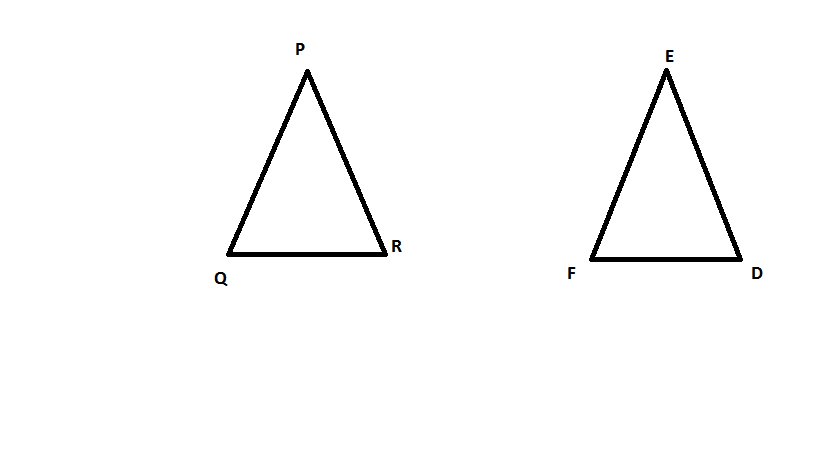
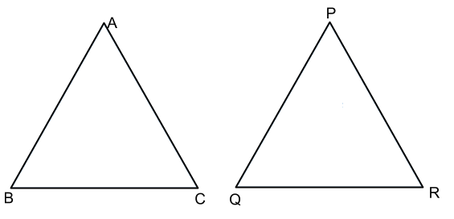
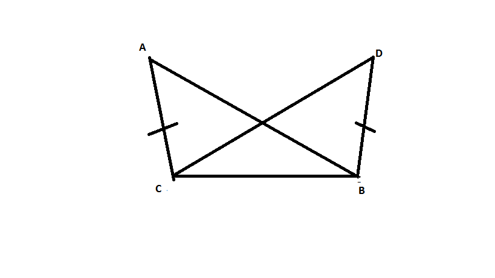
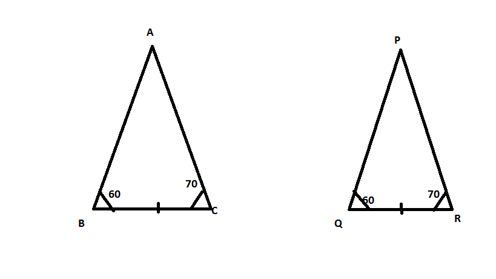
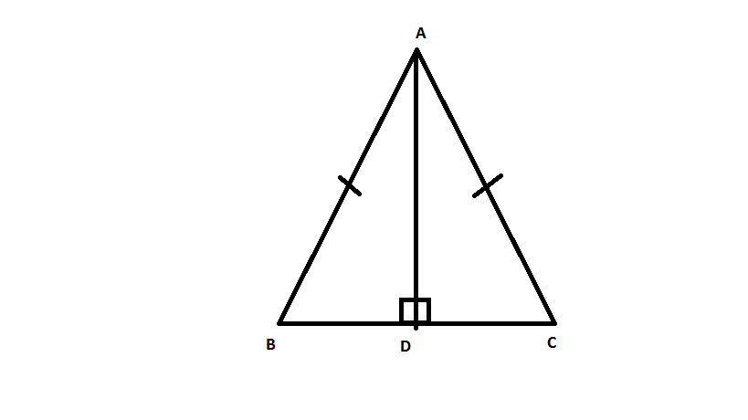
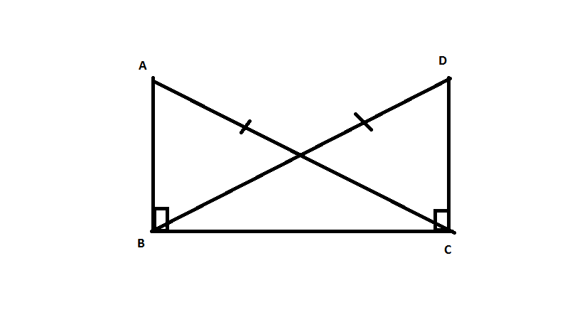

Question:1
Explain the concept of congruence of figures with the help of certain examples.
Solution:
Congruent objects or figures are exact copies of each other or we can say mirror images of each other. The relation of two objects being congruent is called congruence.
Consider Ball A and Ball B. These two balls are congruent.

Now consider the two stars below. Star A and Star B are exactly the same in size, colour and shape. These are congruent stars.

Let us look at the triangles below, Here we have triangle PQR and triangle DEF.
These two triangles have corresponding angles equal and corresponding sides equal. Thus these triangles are congruent to each other.

Question:2
Fill in the blanks:
(i) Two line segments are congruent if .......
(ii) Two angles are congruent if ......
(iii) Two squres are congruent if .......
(iv) Two rectangles are congruent if .......
(v) Two circles are congruent if .......
Solution:
1) They have the same length, since they can superpose on each other.
2) Their measures are the same. On superposition, we can see that the angles are equal.
3) Their sides are equal. All the sides of a square are equal and if two squares have equal sides, then all their sides are of the same length. Also angles of a square are 90o which is also the same for both the squares.
4) Their lengths are equal and their breadths are also equal. The opposite sides of a rectangle are equal. So if two rectangles have lengths of the same size and breadths of the same size, then they are congruent to each other.
5) Their radii are of the same length. Then the circles will have the same diameter and thus will be congruent to each other.
Question:3
In Fig., ∠POQ ≅ ∠ROS, can we say that ∠POR ≅ ∠QOS
Solution:
We have,
Question:4
In Fig., a = b = c, name the angle which is congruent to ∠AOC.
Solution:
We have,
Question:5
Is it correct to say that any two right angles are congruent? Give reasons to justify your answer.
Solution:
Two right angles are congruent to each other because they both measure 90 degrees.
We know that two angles are congruent if they have the same measure.
Question:6
In Fig. 8, ∠AOC ≅ ∠PYR and ∠BOC ≅ ∠QYR. Name the angle which is congruent to ∠AOB.
Solution:
Question:7
Which of the following statements are true and which are false;
(i) All squares are congruent.
(ii) If two squares have equal areas, they are congruent.
(iii) If two rectangles have equal area, they are congruent.
(iv) If two triangles are equal in area, they are congruent.
Solution:
i) False. All the sides of a square are of equal length. However, different squares can have sides of different lengths. Hence all squares are not congruent.
ii) True
Area of a square = side side
Therefore, two squares that have the same area will have sides of the same lengths. Hence they will be congruent.
iii) False
Area of a rectangle = length breadth
Two rectangles can have the same area. However, the lengths of their sides can vary and hence they are not congruent.
Example: Suppose rectangle 1 has sides 8 m and 8 m and area 64 metre square.
Rectangle 2 has sides 16 m and 4 m and area 64 metre square.
Then rectangle 1 and 2 are not congruent.
iv) False
Area of a triangle =
Two triangles can have the same area but the lengths of their sides can vary and hence they cannot be congruent.
Question:8
In the following pairs of triangles (Fig. 12 to 15), the lengths of the sides are indicated along sides. By applying SSS condition, determine which are congruent. State the result in symbolic form.
Solution:
1) In
AB = DE = 4.5 cm (Side)
BC = EF = 6 cm (Side)
and AC = DF = 4 cm (Side)
Therefore, by SSS criterion of congruence, .
2)
Therefore, by SSS criterion of congruence, .
3)
Therefore, by SSS criterion of congruence, .
Question:9
In Fig. 16, AD = DC and AB = BC.
(i) Is ∆ ABD ≅ ∆ CBD?
(ii) State the three parts of matching pairs you have used to answer (i).
Solution:
Yes by the SSS criterion.
We have used the three conditions in the SSS criterion as follows:
AD = DC
AB = BC
and DB = BD
Question:10
In Fig. 17, AB = DC and BC = AD.
(i) Is ∆ ABC ≅ ∆ CDA?
(ii) What congruence condition have you used?
(iii) You have used some fact, not given in the question, what is that?
Solution:
We have AB = DC
BC = AD
and AC = AC
Therefore by SSS .
We have used Side Side Side congruence condition with one side common in both the triangles.
Yes, we have used the fact that AC = CA.
Question:11
If ∆ PQR ≅ ∆ EFD,
(i) Which side of ∆ PQR equals ED?
(ii) Which angle of ∆ PQR equals ∠E?
Solution:
△PQR △EDF
1) Therefore PR = ED since the corresponding sides of congruent triangles are equal.
2) since the corresponding angles of congruent triangles are equal.
Question:12
Triangles ABC and PQR are both isosceles with AB = AC and PQ = PR respectively. If also, AB = PQ and BC = QR, are the two triangles congruent? Which condition do you use?
If ∠B = 50°, what is the measure of ∠R?
Solution:

We have AB = AC in isosceles ABC
and PQ = PR in isosceles PQR.
Also, we are given that AB = PQ and QR = BC.
Therefore, AC = PR (AB = AC, PQ = PR and AB = PQ)
Hence, .
Now
Question:13
ABC and DBC are both isosceles triangles on a common base BC such that A and D lie on the same side of BC. Are triangles ADB and ADC congruent? Which condition do you use? If ∠BAC = 40° and∠BDC = 100°; then find ∠ADB.
Solution:
YES
AB = AC , DB = DC AND AD= DA
Question:14
∆ ABC and ∆ ABD are on a common base AB, and AC = BD and BC = AD as shown in Fig. 18. Which of the following statements is true?
(i) ∆ ABC ≅ ∆ ABD
(ii) ∆ ABC ≅ ∆ ADB
(iii) ∆ ABC ≅ ∆ BAD
Solution:
In ABC and BAD we have,
AC = BD (given)
BC = AD (given)
and AB = BA (common)
Therefore by SSS criterion of congruency, ABC BAD.
There option (iii) is true.
Question:15
In Fig. 19, ∆ ABC is isosceles with AB = AC, D is the mid-point of base BC.
(i) Is ∆ ADB ≅ ∆ ADC?
(ii) State the three pairs of matching parts you use to arrive at your answer.
Solution:
We have AB = AC.
Also since D is the midpoint of BC, BD = DC.
And AD = DA.
Therefore by SSS condition, .
We have used AB, AC : BD, DC and AD, DA.
Question:16
In Fig. 20, ∆ ABC is isosceles with AB = AC. State if ∆ ABC ≅ ∆ ACB. If yes, state three relations that you use to arrive at your answer.
Solution:
Yes by SSS condition.
Since ABC is an isosceles triangle, AB = AC, BC = CB and AC = AB.
Question:17
Triangles ABC and DBC have side BC common, AB = BD and AC = CD. Are the two triangles congruent? State in symbolic form. Which congruence condition do you use? Does ∠ABD equal ∠ACD? Why or why not?
Solution:
Yes.
No,
because AB AC.

Question:18
By applying SAS congruence condition, state which of the following pairs (Fig. 28) of triangles are congruent. State the result in symbolic form
Solution:
1) We have OA = OC and OB = OD and∠AOB =∠COD which are vertically opposite angles.
Therefore by SAS condition, △AOC ≅ △BOD.
2) We have BD = DC
∠ADB =∠ADC = 90°
and AD = AD
Therefore by SAS condition, △ADB ≅ △ADC.
3) We have AB = DC
ABD = ∠CDB and BD = DB
Therefore by SAS condition, △ABD ≅ △CBD.
4) We have BC = QR
∠ABC =∠PQR = 90°
and AB = PQ
Therefore by SAS condition, △ABC ≅ △PQR.
Question:19
State the condition by which the following pairs of triangles are congruent.
Solution:
1) AB = AD
BC = CD
and AC = CA
Therefore by SSS condition, .
2) AC = BD
AD = BC and AB = BA
Therefore by SSS condition, .
3) AB = AD
and AC = AC
Therefore by SAS condition, .
4) AD = BC
DAC = BCA
and AC = CA
Therefore by SAS condition, .
Question:20
In Fig. 30, line segments AB and CD bisect each other at O. Which of the following statements is true?
(i) ∆ AOC ≅ ∆ DOB
(ii) ∆ AOC ≅ ∆ BOD
(iii) ∆ AOC ≅ ∆ ODB.
State the three pairs of matching parts, yut have used to arive at the answer.
Solution:
We have AO = OB.
And CO = OD
Also ∠AOC = ∠BOD
Therefore by SAS condition, △AOC ≅ △BOD.
Therefore, statement (ii) is true.
Question:21
Line-segments AB and CD bisect each other at O. AC and BD are joined forming triangles AOC and BOD. State the three equality relations between the parts of the two triangles, that are given or otherwise known. Are the two triangles congruent? State in symbolic form. Which congruence condition do you use?
Solution:
We have AO = OB and CO = OD since AB and CD bisect each other at O.
Also since they are opposite angles on the same vertex.
Therefore by SAS congruence condition, .
Question:22
∆ ABC is isosceles with AB = AC. Line segment AD bisects ∠A and meets the base BC in D.
(i) Is ∆ ADB ≅ ∆ ADC?
(ii) State the three pairs of matching parts used to answer (i).
(iii) Is it true to say that BD = DC?
Solution:
(i) We have AB = AC (given)
(AD bisects )
and AD = AD (common)
Therefore by SAS condition of congruence, .
(ii) We have used AB, AC; ; AD, DA.
(iii) Now therefore by c.p.c.t BD = DC.
Question:23
In Fig. 31,
AB =
AD and
∠BAC = ∠DAC.
(i) State in symbolic form the congruence of two triangles ABC and ADC that is true.
(ii) Complete each of the following, so as to make it true:
(a) ∠ABC = ........
(b) ∠ACD = ........
(c) Line segment AC bisects ..... and .....
.png)
Solution:
i) AB = AD (given)
(given)
AC = CA (common)
Therefore by SAS conditionof congruency, .
ii) (c.p.c.t)
(c.p.c.t)
Question:24
In Fig. 32, AB || DC and AB = DC.
(i) Is ∆ ACD ≅ ∆ CAB?
(ii) State the three pairs of matching parts used to answer (i).
(iii) Which angle is equal to ∠CAD?
(iv) Does it follow from (iii) that AD || BC?
Solution:
(i) Yes by SAS condition of congruency.
(ii) We have used AB = DC, AC = CA and .
(iii) since the two triangles are congruent.
(iv) Yes, this follows from ADBC as alternate angles are equal.If alternate angles are equal the lines are parallel.
Question:25
Which of the following pairs of triangles are congruent by ASA condition?
Solution:
1) We have
2)
3)
4)
Question:26
In Fig. 37, AD bisects ∠A and AD ⊥ BC.
(i) Is ∆ ADB ≅ ∆ ADC?
(ii) State the three pairs of matching parts you have used in (i).
(iii) Is it true to say that BD = DC?
Solution:
Question:27
Draw any triangle ABC. Use ASA condition to construct another triangle congruent to it.
Solution:
We have drawn

Question:28
In ∆ ABC, it is known that ∠B = ∠C. Imagine you have another copy of ∆ ABC
(i) Is ∆ ABC ≅ ∆ ACB?
(ii) State the three pairs of matching parts you have used to answer (i).
(iii) Is it true to say that AB = AC?
Solution:
(i) Yes .
(ii) We have used .
Also BC = CB
(iii) Yes, it is true to say that AB = AC since .
Question:29
In Fig. 38, AX bisects ∠BAC as well as ∠BDC. State the three facts needed to ensure that ∆ ABD ≅ ∆ ACD.
Solution:
Question:30
In Fig. 39, AO = OB and ∠A = ∠B.
(i) Is ∆ AOC ≅ ∆ BOD?
(ii) State the matching pair you have used, which is not given in the question.
(iii) Is it true to say that ∠ACO = ∠BDO?
Solution:
We have
Question:31
In each of the following pairs of right triangles, the measures of some parts are indicated along side. State by the application of RHS congruence condition which are congruent. State each result in symbolic form. (Fig. 46)
Solution:
i)
ii)
iii)
iv)
v)
Question:32
∆ ABC is isosceles with AB = AC. AD is the altitude from A on BC.
(i) Is ∆ ABD ≅ ACD?
(ii) State the pairs of matching parts you have used to answer (i).
(ii) Is it true to say that BD = DC?
Solution:
(i)Yes, by RHS congruence condition.
(ii) We have used Hyp AB = Hyp AC
AD = DA
and (ADBC at point D)
(iii)Yes, it is true to say that BD = DC (c.p.c.t) since we have already proved that the two triangles are congruent.
Question:33
∆ ABC is isoseles with AB = AC. Also, AD ⊥ BC meeting BC in D. Are the two triangles ABD and ACD congruent? State in symbolic form. Which congruence condtion do you use? Which side of ∆ ADC equls BD? Which angle of ∆ ADC equals ∠B?
Solution:
We have AB = AC ......(1)
AD = DA (common)........(2)
and (ADBC at point D)........(3)
Therefore from 1, 2 and 3, by RHS congruence condition,

Question:34
Draw a right triangle ABC. Use RHS condition to construct another triangle congruent to it.
Solution:
Consider

Question:35
In Fig. 47, BD and CE are altitudes of ∆ ABC and BD = CE.
(i) Is ∆ BCD ≅ ∆ CBE?
(ii) State the three pairs of matching parts you have used to answer (i).
Solution:
(i) Yes, by RHS congruence condition.
(ii) We have used hyp BC = hyp CB
BD = CE (given in question)
and .